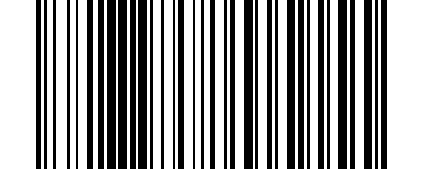

Wireless Mode#
This mode uses the 2.4GHz frequency band for data transmission and relies on radio frequency (RF) technology, which connects to the computer via a USB receiver and allows the scanner to move freely within a certain distance.

* Wireless Mode#
Note
Receivers are divided into small receivers and base receivers
One-to-One Pairing#

One-to-One Pairing#
Note
It works in the following situations: pull out the receiver, scan the pairing code on it, and the scanner will make a continuous beeping sound. At this time, re-insert the receiver, and the sound will stop immediately, indicating that the pairing is successful.
This operation is required in the following situations:
① Plug the 2.4G receiver into the USB port. After scanning successfully, it will beep three times but will not upload data.
② Requires pairing with a new receiver.
Receiver Keyboard Transmission Speed[1]#
{kind=link}
High Speed#
{kind=link}

High Speed#
Medium Speed#

Medium Speed#
Low Speed#
{kind=link}
Low Speed#